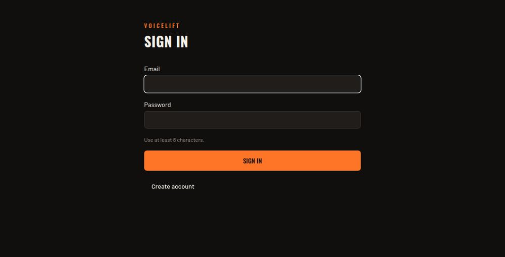
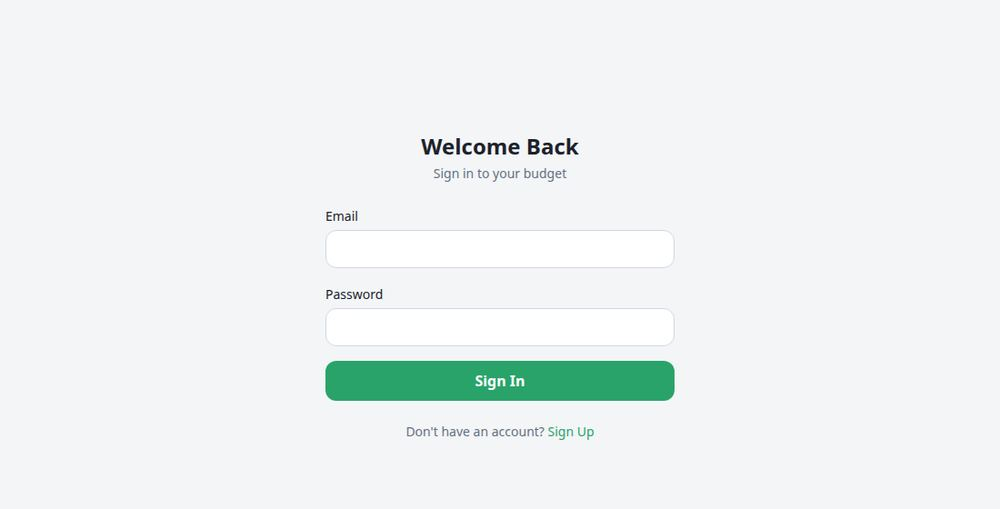
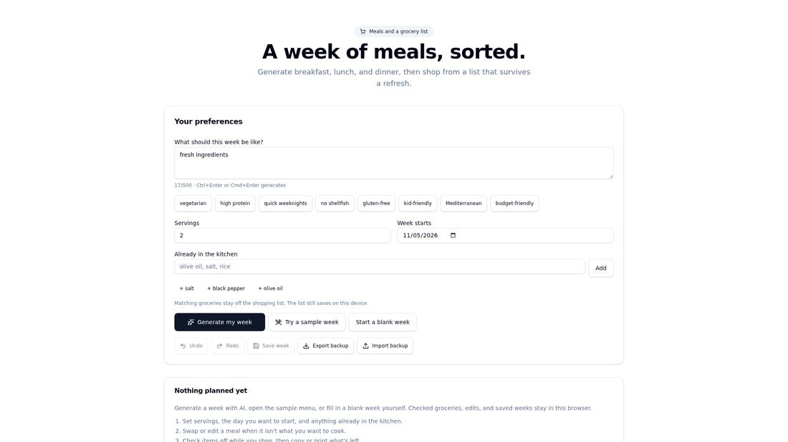
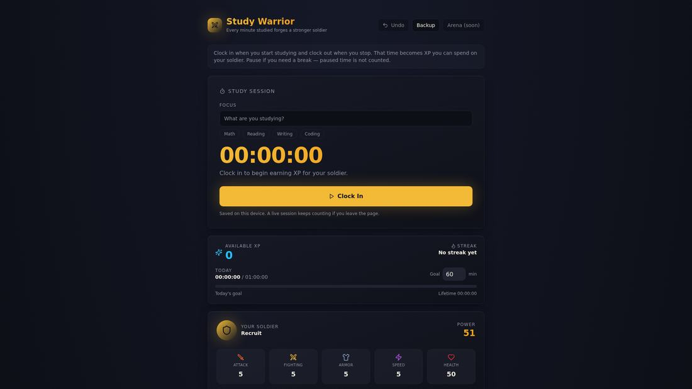
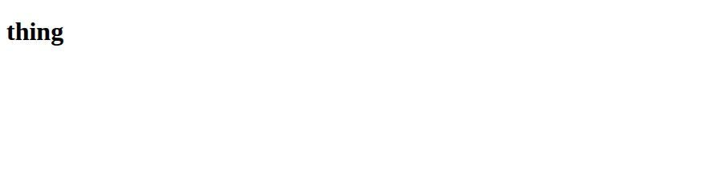
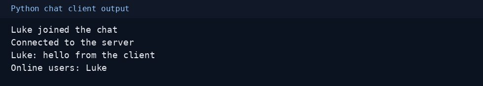
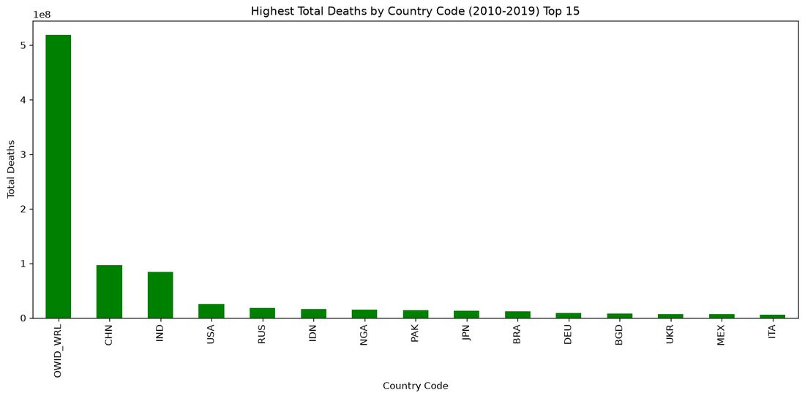
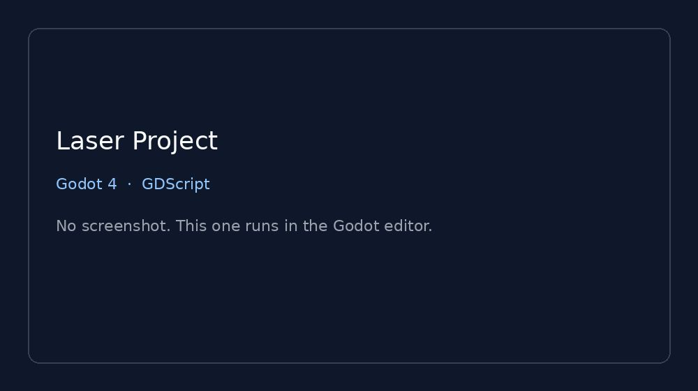
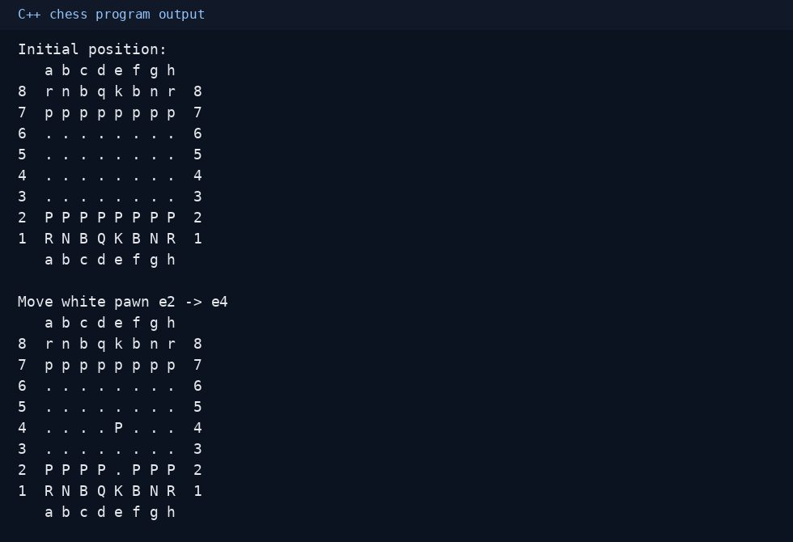

VoiceLift
A workout log you sign in to and fill by talking or by typing sets, reps, weights, and climbs. It stores the day's entries, tracks a working weight for each lift, and shows training over the last four weeks.
Programs I have built, from live web apps to servers, data, and games.

A workout log you sign in to and fill by talking or by typing sets, reps, weights, and climbs. It stores the day's entries, tracks a working weight for each lift, and shows training over the last four weeks.

An envelope budget, published as Dingo Dough, that you sign in to. It tracks income and budget envelopes, and it has a dark and a light theme.

A meal planner that builds a week of breakfast, lunch, and dinner from preferences, servings, and ingredients already in the kitchen. The grocery list stays in the browser. There is no public site yet.

A study timer, shown in the app as Study Warrior, where clocked-in time becomes XP you can spend on a soldier. An arena for fighting other people is marked as not ready yet. There is no public site yet.

A Rust HTTP server that accepts connections on localhost and runs them on a pool of worker threads. It serves a home page, a five-second /sleep route, and a 404 page.

A Python chat app with a TCP server and a client so several people can talk on a local network. The server assigns nicknames, broadcasts messages, and can list who is online.

A Python script that loads a CSV of global deaths, checks the columns, and keeps 2010 through 2019. It totals deaths by country code and by year, then draws a bar chart and a line chart.

A Godot 4 scene that scatters walls and mirrors, then fires a laser that reflects off the mirrors. The beam stops when it hits a goal or uses up its ten bounces.

A C++ console program that sets up an 8 by 8 board in the standard starting position and prints it. It demonstrates one pawn move from e2 to e4. Full piece rules and check are not in yet.